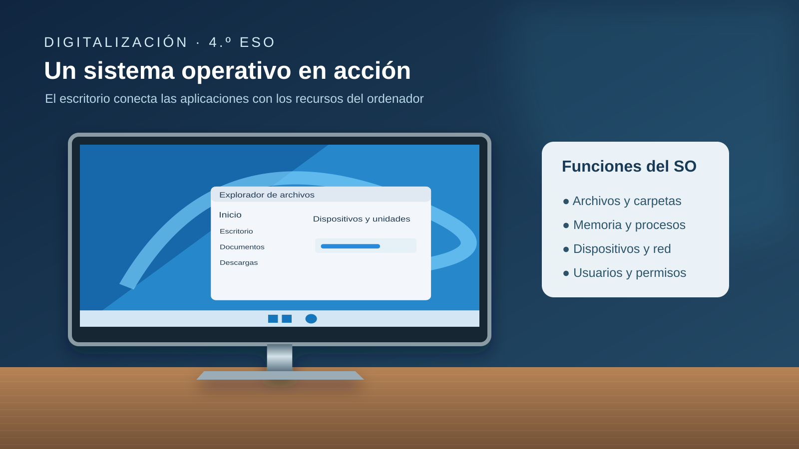
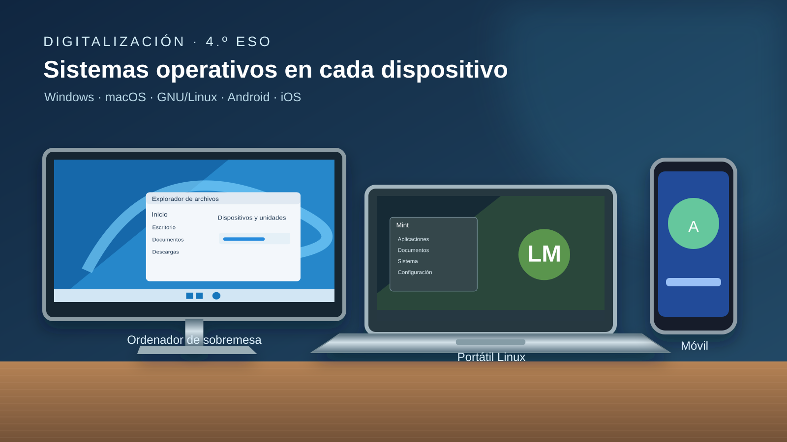
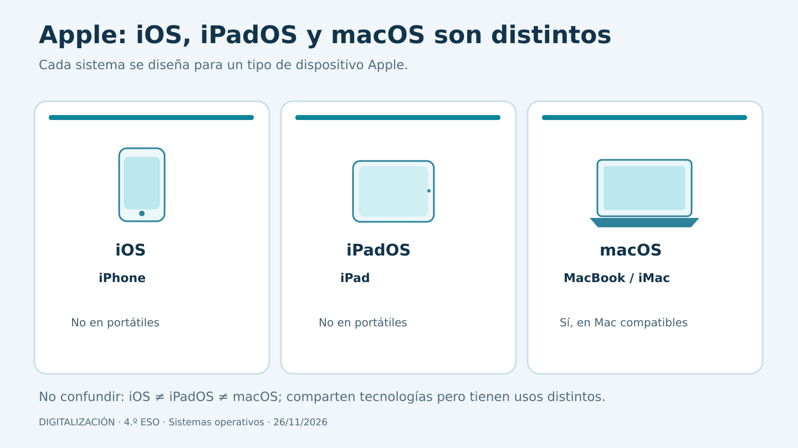
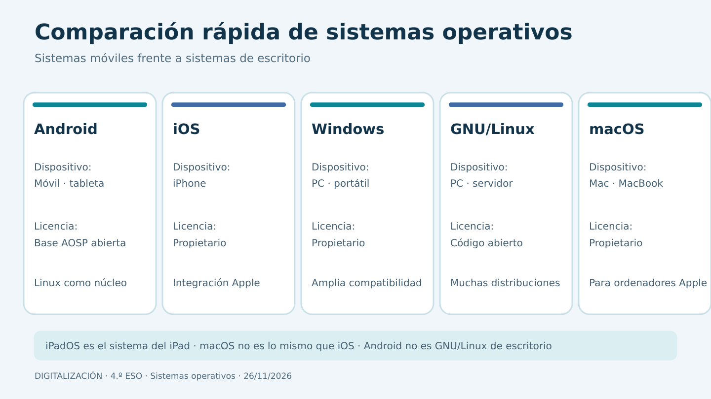
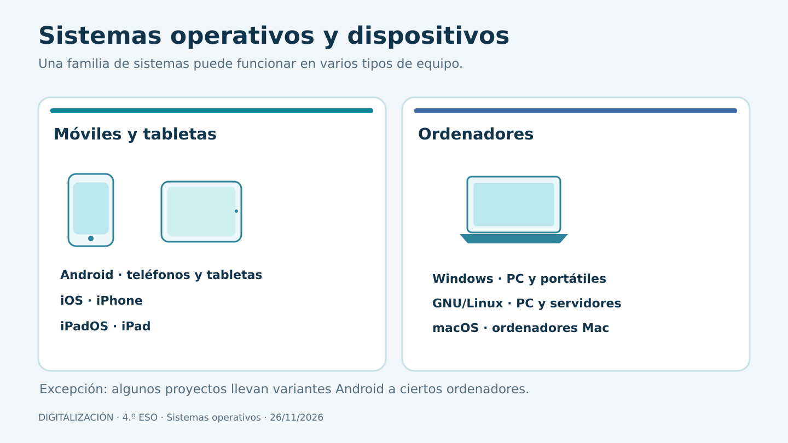
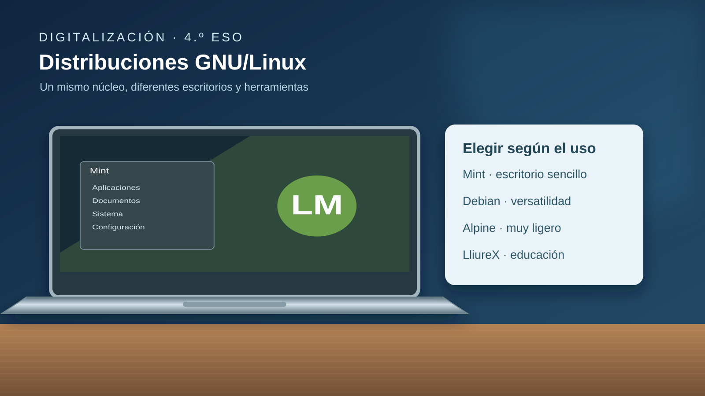
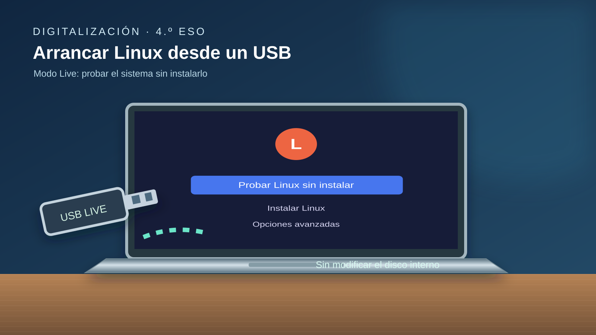
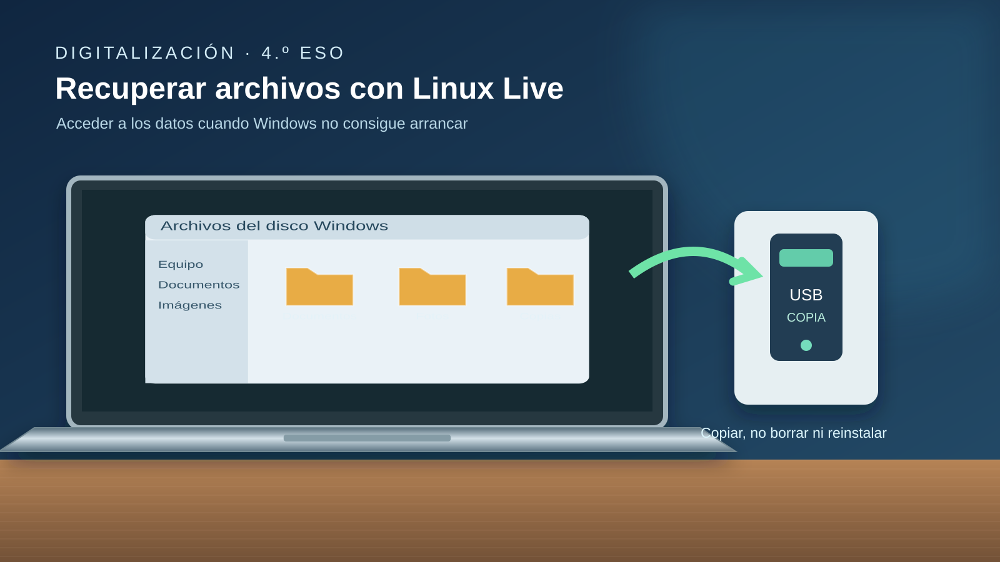

Digitalización · Tema 01
Tema 2. Sistemas operativos
Aprende explorando los componentes y sus funciones
Tema: v1.5.1 · 26/11/2026
Digitalización · Tema 02
Objetivos de aprendizaje
Tema: v1.5.1 · 26/11/2026
Digitalización · Tema 03
1. ¿Qué es un sistema operativo?
Tema: v1.5.1 · 26/11/2026
Digitalización · Tema 04
Funciones principales
Tema: v1.5.1 · 26/11/2026
Digitalización · Tema 05
Funciones principales
Tema: v1.5.1 · 26/11/2026
Digitalización · Tema 06
El escritorio de un sistema operativo

Tema: v1.5.1 · 26/11/2026
Digitalización · Tema 07
2. Breve historia y evolución
| Época | Evolución | Idea clave |
|---|---|---|
| Años 50–60 | Sistemas por lotes en grandes ordenadores | Ejecutaban trabajos sin interacción continua con el usuario. |
| Años 60–70 | Tiempo compartido; nacimiento de Unix | Varios usuarios y programas podían compartir un ordenador. |
| Años 80 | Ordenadores personales, MS-DOS y primeros entornos gráficos populares | Se extendió la informática doméstica. |
| Años 90 | Windows, GNU/Linux y evolución de Mac OS | Se consolidaron distintos modelos de sistema. |
| Años 2000 | macOS basado en Unix, popularización de Linux en servidores | Mayor importancia de Internet y las redes. |
| Años 2010–2020 | Android, iOS, nube, virtualización y contenedores | El sistema operativo está también en móviles y centros de datos. |
Tema: v1.5.1 · 26/11/2026
Digitalización · Tema 08
2. Breve historia y evolución
Tema: v1.5.1 · 26/11/2026
Digitalización · Tema 09
3. Tipos de sistemas operativos
Tema: v1.5.1 · 26/11/2026
Digitalización · Tema 10
3. Tipos de sistemas operativos
Tema: v1.5.1 · 26/11/2026
Digitalización · Tema 11
4. Principales sistemas operativos: comparación
| Sistema | Uso habitual | Licencia y coste básico | Aspecto importante |
|---|---|---|---|
| Windows | PC personales, empresas, videojuegos | Propietario; normalmente requiere licencia de pago, a menudo incluida en el precio del equipo | Amplia compatibilidad comercial |
| macOS | Ordenadores Apple | Propietario; incluido para equipos Apple compatibles | Integración con hardware Apple |
| GNU/Linux (Debian, Mint, etc.) | PC, servidores, educación | Muchas distribuciones son gratuitas y de código abierto; otras venden suscripciones o soporte | Se puede elegir entre distintas distribuciones |
| Android | Móviles, tabletas y otros equipos | Base de código abierto (AOSP), con componentes y servicios que pueden ser propietarios; normalmente incluido en el dispositivo | Gran variedad de fabricantes |
| iOS | iPhone | Propietario; incluido en iPhone compatible | Ecosistema de Apple |
Tema: v1.5.1 · 26/11/2026
Digitalización · Tema 12
4. Principales sistemas operativos: comparación
Tema: v1.5.1 · 26/11/2026
Digitalización · Tema 13
4.1. El coste real de un sistema operativo
Tema: v1.5.1 · 26/11/2026
Digitalización · Tema 14
4.1. El coste real de un sistema operativo
Tema: v1.5.1 · 26/11/2026
Digitalización · Tema 15
Sistemas operativos en distintos dispositivos

Tema: v1.5.1 · 26/11/2026
Digitalización · Tema 16
4.2. Sistemas operativos móviles: Android, iOS y su relación con el ordenador
Tema: v1.5.1 · 26/11/2026
Digitalización · Tema 17
4.2.1. Android: un sistema basado en Linux
Tema: v1.5.1 · 26/11/2026
Digitalización · Tema 18
4.2.1. Android: un sistema basado en Linux
Tema: v1.5.1 · 26/11/2026
Digitalización · Tema 19
4.2.1. Android: un sistema basado en Linux
Tema: v1.5.1 · 26/11/2026
Digitalización · Tema 20
4.2.2. iOS: el sistema del iPhone
Tema: v1.5.1 · 26/11/2026
Digitalización · Tema 21
4.2.2. iOS: el sistema del iPhone
Tema: v1.5.1 · 26/11/2026
Digitalización · Tema 22
4.2.3. iOS, iPadOS y macOS no son lo mismo
Tema: v1.5.1 · 26/11/2026
Digitalización · Tema 23
4.2.3. iOS, iPadOS y macOS no son lo mismo
| Sistema | Dispositivo habitual | ¿Puede instalarse normalmente en un portátil? |
|---|---|---|
| iOS | iPhone | No |
| iPadOS | iPad | No; se utiliza en tabletas iPad |
| macOS | MacBook, iMac, Mac mini y otros Mac compatibles | Sí, en portátiles Mac compatibles |
Tema: v1.5.1 · 26/11/2026
Digitalización · Tema 24
4.2.3. iOS, iPadOS y macOS no son lo mismo
Tema: v1.5.1 · 26/11/2026
Digitalización · Tema 25
iOS, iPadOS y macOS: cada dispositivo tiene su sistema

Tema: v1.5.1 · 26/11/2026
Digitalización · Tema 26
4.2.4. Android, iOS, Windows, GNU/Linux y macOS: comparación
| Característica | Android | iOS | Windows | GNU/Linux | macOS |
|---|---|---|---|---|---|
| Uso principal | Móviles y tabletas | iPhone | PC y portátiles | PC, portátiles y servidores | Ordenadores Mac |
| Fabricante o comunidad | Google y fabricantes | Apple | Microsoft | Comunidad y empresas | Apple |
| ¿Código abierto? | Base AOSP, sí; otros componentes pueden ser cerrados | Propietario | Propietario | Generalmente libre y abierto | Propietario |
| Instalación en portátiles | Solo variantes o proyectos compatibles | No | Sí, si el equipo es compatible | Sí, si el equipo es compatible | Sí, en Mac compatibles |
| Interacción más común | Táctil | Táctil | Teclado, ratón y también táctil | Teclado, ratón y también táctil | Teclado, ratón y trackpad |
Tema: v1.5.1 · 26/11/2026
Digitalización · Tema 27
4.2.4. Android, iOS, Windows, GNU/Linux y macOS: comparación
Tema: v1.5.1 · 26/11/2026
Digitalización · Tema 28
Comparación de Android, iOS, Windows, GNU/Linux y macOS

Tema: v1.5.1 · 26/11/2026
Digitalización · Tema 29
4.2.5. ¿Dónde podemos instalar cada sistema?
Tema: v1.5.1 · 26/11/2026
Digitalización · Tema 30
4.2.5. ¿Dónde podemos instalar cada sistema?
Tema: v1.5.1 · 26/11/2026
Digitalización · Tema 31
Relación entre sistemas operativos y dispositivos

Tema: v1.5.1 · 26/11/2026
Digitalización · Tema 32
4.2.5. ¿Dónde podemos instalar cada sistema?
Tema: v1.5.1 · 26/11/2026
Digitalización · Tema 33
5. Cómo funciona un sistema operativo
Tema: v1.5.1 · 26/11/2026
Digitalización · Tema 34
5. Cómo funciona un sistema operativo
Tema: v1.5.1 · 26/11/2026
Digitalización · Tema 35
6. Interfaz gráfica y terminal
Tema: v1.5.1 · 26/11/2026
Digitalización · Tema 36
7. Archivos, carpetas, rutas y permisos
Tema: v1.5.1 · 26/11/2026
Digitalización · Tema 37
7. Archivos, carpetas, rutas y permisos
Tema: v1.5.1 · 26/11/2026
Digitalización · Tema 38
8. Distribuciones GNU/Linux y descarga de sistemas operativos
Tema: v1.5.1 · 26/11/2026
Digitalización · Tema 39
8.1. Comparación y enlaces oficiales de descarga
Tema: v1.5.1 · 26/11/2026
Digitalización · Tema 40
8.1. Comparación y enlaces oficiales de descarga
| Sistema | Uso recomendado y características | Coste, requisitos y observaciones | Descarga oficial |
|---|---|---|---|
| Linux Mint | Escritorio sencillo para iniciarse en Linux; Cinnamon, MATE o Xfce. | Descarga gratuita. Xfce suele consumir menos recursos que Cinnamon; comprobar requisitos. | Linux Mint — Descargas |
| Debian GNU/Linux | PC, servidores y educación; configurable con distintos escritorios. | Descarga gratuita. Ofrece imágenes de instalación ( netinst ) y opciones Live; requisitos según edición. | Debian — Descargar e instalar |
| Alpine Linux | Distribución minimalista para servidores, contenedores y proyectos técnicos. | Gratuita y muy ligera en configuraciones mínimas, pero no es un escritorio listo para principiantes. | Alpine Linux — Downloads |
| Ubuntu Desktop | Ordenadores personales y portátiles; versiones LTS con soporte prolongado. | Descarga gratuita; comprobar los requisitos de la edición y la arquitectura. | Ubuntu — Download Desktop |
| Fedora Workstation | Escritorio moderno con tecnologías actuales; permite probar el sistema en modo Live. | Descarga gratuita; comprobar requisitos del equipo. | Fedora — Descargar Workstation |
| LliureX | Distribución Linux educativa, adaptada a centros y aulas. | Descarga gratuita; consultar los requisitos y las versiones disponibles. | LliureX (distribución educativa) |
| Red Hat Enterprise Linux (RHEL) | Servidores y empresas con necesidades de administración y soporte. | Distribución comercial con suscripciones; existen modalidades de acceso gratuito para usos específicos. | Red Hat — Información y descarga |
Tema: v1.5.1 · 26/11/2026
Digitalización · Tema 41
8.1. Comparación y enlaces oficiales de descarga
| Sistema | Uso recomendado y características | Coste, requisitos y observaciones | Descarga oficial |
|---|---|---|---|
| Windows 11 | PC, portátiles, aplicaciones comerciales y videojuegos. | La ISO se puede descargar desde Microsoft; para utilizarlo y activarlo se necesita una licencia válida y hardware compatible. | Microsoft — Descargar Windows 11 (ISO) |
Tema: v1.5.1 · 26/11/2026
Digitalización · Tema 42
8.1. Comparación y enlaces oficiales de descarga
Tema: v1.5.1 · 26/11/2026
Digitalización · Tema 43
8.1. Comparación y enlaces oficiales de descarga
Tema: v1.5.1 · 26/11/2026
Digitalización · Tema 44
Distribuciones GNU/Linux

Tema: v1.5.1 · 26/11/2026
Digitalización · Tema 45
8.2. ¿Qué es una ISO y cómo se utiliza?
Tema: v1.5.1 · 26/11/2026
Digitalización · Tema 46
8.2. ¿Qué es una ISO y cómo se utiliza?
Tema: v1.5.1 · 26/11/2026
Digitalización · Tema 47
8.2. ¿Qué es una ISO y cómo se utiliza?
Tema: v1.5.1 · 26/11/2026
Digitalización · Tema 48
9. Crear un USB de arranque desde Linux y utilizarlo en modo Live
Tema: v1.5.1 · 26/11/2026
Digitalización · Tema 49
9. Crear un USB de arranque desde Linux y utilizarlo en modo Live
Tema: v1.5.1 · 26/11/2026
Digitalización · Tema 50
9. Crear un USB de arranque desde Linux y utilizarlo en modo Live
Tema: v1.5.1 · 26/11/2026
Digitalización · Tema 51
Arranque desde un USB Live

Tema: v1.5.1 · 26/11/2026
Digitalización · Tema 52
9. Crear un USB de arranque desde Linux y utilizarlo en modo Live
Tema: v1.5.1 · 26/11/2026
Digitalización · Tema 53
Recuperación de archivos de Windows con Linux Live

Tema: v1.5.1 · 26/11/2026
Digitalización · Tema 54
10. Actualizaciones, mantenimiento y seguridad
Tema: v1.5.1 · 26/11/2026
Digitalización · Tema 55
11. Actividades propuestas
Tema: v1.5.1 · 26/11/2026
Digitalización · Tema 56
11. Actividades propuestas
Tema: v1.5.1 · 26/11/2026
Digitalización · Tema 57
12. Preguntas de repaso
Tema: v1.5.1 · 26/11/2026
Digitalización · Tema 58
12. Preguntas de repaso
Tema: v1.5.1 · 26/11/2026
Digitalización · Tema 59
12. Preguntas de repaso
Tema: v1.5.1 · 26/11/2026
Digitalización · Tema 60
13. Glosario
Tema: v1.5.1 · 26/11/2026
Digitalización · Tema 61
13. Glosario
Tema: v1.5.1 · 26/11/2026
Digitalización · Tema 62
13. Glosario
Tema: v1.5.1 · 26/11/2026
Digitalización · Tema 63
13. Glosario
Tema: v1.5.1 · 26/11/2026